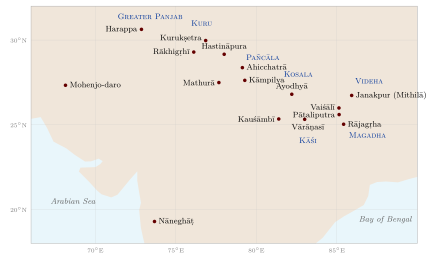

Chapter 12: The Vedic Schools: Geography, History and Survival¶
Invocatory Passage
ekaśatam adhvaryuśākhāḥ sahasravartmā sāmavedaḥ
ekaviṃśatidhā bāhvṛcyaṃ navadhātharvaṇo vedaḥ
The Adhvaryu [Veda] has a hundred and one branches,
the Sāmaveda a thousand paths;
the Veda of the Bahvṛcas is twenty-one-fold,
the Atharvan Veda ninefold.
— Patañjali, Mahābhāṣya, introduction (Paspaśāhnika)
12.1 Introduction¶
The Veda has never existed as a single book. It has always been transmitted by schools, each preserving its own version of a Saṃhitā together with its own Brāhmaṇa, ritual manuals and rules of recitation. Patañjali’s figures, quoted above, are the classical statement of their number; they are conventional rather than historical, and they contrast sharply with the number of schools whose texts survive (Table 12.1).
| Veda | Traditional Number | Schools whose Saṃhitā Survives |
|---|---|---|
| Ṛgveda | 21 | Śākala (complete); other schools, such as Bāṣkala, Āśvalāyana and Śāṅkhāyana, are known from ancillary texts and minor variants |
| Yajurveda | 101 | White: Mādhyandina and Kāṇva (Vājasaneyi Saṃhitā); Black: Taittirīya, Maitrāyaṇī, Kaṭha, and Kapiṣṭhala (fragmentary) |
| Sāmaveda | 1,000 | Kauthuma, Rāṇāyanīya, Jaiminīya |
| Atharvaveda | 9 | Śaunaka, Paippalāda |
The loss of most schools is a real impoverishment: each lost śākhā carried not merely a textual variant but a tradition of interpretation and ritual practice, of which fragments survive only as quotations in other texts. This chapter looks at the schools themselves: what a school was, where the different texts were composed, how the schools moved across the subcontinent and were supported by patrons, which of them survive today and in what condition, and how their manuscripts became the printed editions on which modern study depends. The method of oral transmission within the schools is the subject of Chapter 11, and the education of their pupils is treated in Volume 22, Manas and Śikṣā.
12.2 Śākhā and Caraṇa¶
Two terms are used for the Vedic schools. A śākhā (“branch”) is a recension: a particular version of a Veda as handed down in one line of transmission. A caraṇa (“course, conduct”) is the community that follows that line, studying its texts and performing its rites. The two words are often used interchangeably. Most schools take their names from a founding teacher—the Śākala school from Śākalya, the Kaṭhas from Kaṭha, the Taittirīyas, according to legend, from the partridges (tittiri) of Section 3.3—and Pāṇini’s grammar already contains rules for forming the names of such schools and of the texts “proclaimed” by their founders. A remark of Patañjali, that the Kāṭhaka and Kālāpaka texts are recited “in every village” (on Pāṇini 4.3.101), suggests how prominent some schools, now lost or nearly lost, once were.
A school’s identity was defined by its texts. The Caraṇavyūha, a late supplementary text attributed to Śaunaka, lists the schools of each Veda; the Brāhmaṇas and Upaniṣads end their sections with genealogies (vaṃśa) of teachers through whom the text was handed down, such as those of the Bṛhadāraṇyaka Upaniṣad (2.6, 4.6, 6.5), and the Sāmaveda has a whole Vaṃśa Brāhmaṇa of this kind. Although some of the earliest names in these lists are mythical, the lists show that the schools thought of themselves as lineages of teachers and pupils. Louis Renou’s study of the Vedic schools remains the classic account of how such lineages shaped the formation of the texts (Renou 1947).
A Brahmin traditionally belongs to one Veda and one school, and is expected to study the texts of his own branch (svaśākhā) and to perform his rites by its sūtra. This affiliation is still part of a Brahmin’s formal identity: in the traditional formula of respectful greeting (abhivādana) he names his lineage (gotra) and its ancestral seers (pravara), his sūtra and his śākhā, before his own name. Affiliation to a śākhā was hereditary; it was not a matter of choice, although families sometimes adopted a locally dominant school after migrating.
12.3 Where the Texts Were Composed¶
The Vedic texts rarely say where they were composed, but they contain much indirect evidence: the rivers, mountains and peoples they mention, the plants and animals they know, and the features of their language. Michael Witzel has used such evidence systematically to locate the texts and schools, building on earlier work by Albrecht Weber, Hermann Oldenberg and Willem Caland (Witzel 1987, 1989, 1997). The result is a picture of movement from the north-west towards the east, and later to the south (Table 12.2). The picture is a reconstruction; individual localisations are debated, and texts often contain material of different origins.
| Period | Region | Texts and schools |
|---|---|---|
| Ṛgvedic | Greater Panjab, from the Kabul river to the Yamunā | Ṛgveda, especially the family books |
| Mantra period | Kurukṣetra and the upper Ganga–Yamunā Doab (Kuru) | Atharvaveda; the mantras of the Sāmaveda and Yajurveda; final arrangement of the Ṛgveda |
| Early prose | Kuru country and the north-west | Maitrāyaṇī, Kāṭhaka and Kapiṣṭhala Saṃhitās |
| Later prose | Pañcāla (central and lower Doab) | Taittirīya Saṃhitā and Brāhmaṇa; parts of other Brāhmaṇas |
| Late Brāhmaṇa and early Upaniṣad | Kosala and Videha (east of the Ganga–Yamunā region) | Yājñavalkya’s books of the Śatapatha Brāhmaṇa; Bṛhadāraṇyaka Upaniṣad |
| Sūtra period | Spreading south and west | Āpastamba, Hiraṇyakeśin and other later Taittirīya sūtras in the south; Mānava and Vārāha in the west |
The Śatapatha Brāhmaṇa itself contains two strata of this kind. Its books on the fire altar (6–10) are associated with the teacher Śāṇḍilya and with the western, Kuru region, while the books dominated by Yājñavalkya reflect the eastern court of King Janaka of Videha. The same text preserves a story of the eastward spread of the sacrificial fire, the legend of Videgha Māthava (ŚB 1.4.1), discussed in Section 14.3. Figure 12.1 shows some of the places and regions named in this volume.

Dialect features point in the same direction. In a well-known passage the Śatapatha Brāhmaṇa (3.2.1.23–24) says that the demons (asuras) were defeated because they mispronounced their battle cry, saying he ’lavo instead of he ’rayo (“O enemies”), and it concludes that a Brahmin should not speak barbarously (na brāhmaṇo mlecchet). Replacing r by l is characteristic of the eastern dialects that later became Māgadhī Prakrit, and the story shows western ritualists’ awareness of eastern speech. The Sūtra period saw the Taittirīya schools established in the south: Georg Bühler argued from the Āpastamba Dharmasūtra that the Āpastamba school originated in the Andhra region, and the later Taittirīya sūtras are all associated with the south and west of India.
12.4 The Schools in History¶
From the early centuries CE onwards the history of the schools can be followed in inscriptions. Kings and landholders granted villages and land to Brahmins, and the copper-plate charters recording these grants commonly identify the recipients by their gotra and their Vedic affiliation—as Bahvṛcas (Ṛgvedins), Chandogas (Sāmavedins), Taittirīyas, Vājasaneyins, Kāṇvas and so on. Such grants, and the settlements of learned Brahmins (agrahāra, brahmadeya) they created, show the schools spreading with royal patronage into central and southern India, Bengal and Odisha, and they make it possible to trace the distribution of particular schools region by region. Family and caste traditions in several regions remember a migration of Brahmins from the north at a king’s invitation; whatever their historical value in detail, these traditions reflect the real movement of Vedic schools into new territories.
Some schools prospered in particular places and vanished elsewhere. The Kaṭha school, whose texts Patañjali describes as recited everywhere, survived longest in Kashmir; its Saṃhitā and Āraṇyaka are known from Kashmiri manuscripts, and Kashmiri Brahmins have continued to follow the Kāṭhaka Gṛhyasūtra in their domestic rites long after the recitation of the Kāṭhaka Saṃhitā had ceased (Witzel 1987). The Paippalāda Atharvaveda, known in the nineteenth century from a single Kashmiri birch-bark manuscript, was found in the 1950s to survive in Odisha (Section 5.3). Nepal, where the White Yajurveda predominates, preserved in its libraries many manuscripts of Vedic and ritual texts that had been lost in India.
The schools were sustained by an economy of patronage. A school survived where there were families willing to devote sons to years of memorisation, and patrons—kings, temples, monasteries (maṭha) and landholders—who supported them. Where patronage failed, as it did in many regions with political change and, in the colonial and modern periods, with new forms of education and employment, schools contracted or disappeared. The history of the śākhās is therefore also an economic and social history.
12.5 The Living Schools Today¶
Of the more than a thousand schools of the traditional count, the recited texts of about a dozen survive, in very unequal health (Table 12.3). The information in the table is approximate: the number of fully trained reciters of each school has never been systematically counted, and it changes from generation to generation.
| Veda | School (and sūtra) | Main regions and condition |
|---|---|---|
| Ṛgveda | Śākala (Āśvalāyana) | Widespread: Maharashtra, Karnataka, Andhra Pradesh, Telangana, Tamil Nadu, Kerala |
| Śākala (Śāṅkhāyana, Kauṣītaki) | Small groups, notably among the Nambūdiris of Kerala | |
| Black Yajurveda | Taittirīya (Āpastamba, Baudhāyana, Hiraṇyakeśin and others) | The most widely recited school of South India; also Maharashtra |
| Maitrāyaṇīya | A few families in Maharashtra and Gujarat; endangered | |
| Kaṭha, Kapiṣṭhala | No longer recited; texts in manuscripts | |
| White Yajurveda | Mādhyandina | North and central India, Gujarat, Maharashtra, Nepal |
| Kāṇva | Maharashtra, Karnataka, Andhra Pradesh, Tamil Nadu, Odisha | |
| Sāmaveda | Kauthuma | Gujarat, North India, Tamil Nadu, Andhra Pradesh |
| Rāṇāyanīya | Maharashtra and Karnataka | |
| Jaiminīya | Nambūdiris of Kerala and a few families in Tamil Nadu; endangered | |
| Atharvaveda | Śaunaka | Recitation revived in modern times, mainly in Gujarat and Maharashtra |
| Paippalāda | A few Brahmin families in Odisha; endangered |
The Nambūdiri Brahmins of Kerala deserve special mention. Isolated for centuries from the rest of India, they preserve distinctive schools—the Kauṣītaki tradition of the Ṛgveda, the Baudhāyana and Vādhūla traditions of the Taittirīya, the Jaiminīya Sāmaveda—as well as distinctive styles of recitation accompanied by hand movements, which Frits Staal described in detail (Staal 1961). Their śrauta tradition, documented in the Agnicayana of 1975, is described in Section 8.10. Tamil Nadu has the largest concentration of Taittirīya reciters and preserves both Kauthuma and Jaiminīya chant; Wayne Howard’s study of Sāmavedic chant draws on traditions of Tamil Nadu, Kerala, Karnataka and elsewhere (Howard 1977). Maharashtra, Karnataka and Andhra Pradesh have strong traditions of Ṛgveda and Taittirīya recitation and of the complex vikṛti patterns (Section 11.3); Gujarat and North India are the home of the Mādhyandina and Kauthuma schools, and Varanasi has long been a meeting place of reciters from all regions.
Several schools are seriously endangered: the Jaiminīya Sāmaveda, the Maitrāyaṇīya Yajurveda, the Paippalāda Atharvaveda and some of the smaller sūtra traditions depend on a handful of teachers. The forms of support on which they now rely, and the questions of access that their future raises, are discussed in Sections 11.8 and 15.10.
12.6 The Ancillary Literature of the Schools¶
Besides their Saṃhitās, Brāhmaṇas and sūtras, the schools produced a body of auxiliary texts that were needed to teach, recite and use the Veda correctly. The phonetic manuals (Prātiśākhya and Śikṣā) of each school are described in Section 7.2 and Chapter 11; the supplementary hymns (khila) transmitted with the Ṛgveda in Section 2.7. Several other kinds of text deserve mention.
Indexes.
The anukramaṇīs are systematic indexes of a Saṃhitā. For the Ṛgveda, a series of separate indexes of seers, metres and deities is attributed to Śaunaka, and the Sarvānukramaṇī ascribed to Kātyāyana combines them, giving for every hymn its first words, the number of its verses, its seer, its deity and its metre; the medieval commentary on it by Ṣaḍguruśiṣya adds much traditional lore. These indexes are the source of the ascriptions of hymns to seers discussed in Section 1.5, and they also served as a check on the integrity of the text, since a reciter or copyist could compare his text with the counts they give.
Legends and deities.
The Bṛhaddevatā, a long verse treatise also attributed to Śaunaka, discusses the deities of the Ṛgvedic hymns and tells many of the stories (ākhyāna) that were believed to lie behind them, such as the dialogue hymns of Section 2.10. A. A. Macdonell’s edition and translation remains standard (Macdonell 1904). The work shows how the schools explained the hymns to themselves in the period between the Brāhmaṇas and the medieval commentaries.
Practical use of the hymns.
The Ṛgvidhāna prescribes the recitation of particular Ṛgvedic verses and hymns, with fasting, offerings and other observances, to obtain specific ends—health, prosperity, protection, the removal of sin—and the Sāmavidhāna Brāhmaṇa does the same for the chants of the Sāmaveda. These texts are the Ṛgvedic and Sāmavedic counterparts of the Kauśika Sūtra (Section 9.7), and they show that the hymns were used outside the great rites, by individuals for their own purposes, much as Vedic mantras are used in later devotional and Tantric practice.
Supplements.
Many schools accumulated supplementary texts (pariśiṣṭa) on matters not covered by their main sūtras. The largest collection is the Atharvaveda Pariśiṣṭas, some seventy short texts on omens and portents, astrology, royal ceremonies, gifts and expiations, which reflect the role of Atharvavedic priests as advisers to kings. The Caraṇavyūha, the list of schools mentioned above, is itself such a supplement, as are the lists of lineages and their ancestral seers (pravara) appended to several Śrautasūtras, on which rules of exogamous marriage were later based.
Together these works show the schools as active centres of learning, not merely of memorisation. They also bridge the Vedic and the later literature: their style, their interest in legends and their practical, individual use of mantras point forward to the Purāṇas, the Dharmaśāstras and the ritual handbooks of later centuries.
12.7 From Manuscripts to Printed Editions¶
12.7.1 Manuscripts and Commentaries¶
Vedic manuscripts were made by and for the schools, as aids to teaching and to ritual practice (Section 1.9). They record not only the continuous text but also the word-by-word pada text and, in some schools, the krama text, with the accents marked by lines or numerals above and below the syllables; the song-books of the Sāmaveda carry their own notation. Each region wrote them in its own script—Śāradā in Kashmir, Newari and Devanāgarī in Nepal and the north, Grantha and Malayalam in the south, Odia in Odisha—so that the manuscript record itself maps the distribution of the schools.
The great medieval commentaries also grew out of the schools and their patrons. The most ambitious was the project associated with Sāyaṇa and his brother Mādhava at the court of the Vijayanagara kings Bukka I and Harihara II in the fourteenth century, which produced commentaries on the Saṃhitās and many Brāhmaṇas and Āraṇyakas (Section 2.12). Cezary Galewicz has shown that this was a collective enterprise of a team of scholars and a deliberate act of royal patronage, intended to establish an authoritative interpretation of the whole Veda for the new empire (Galewicz 2009).
12.7.2 The First Printed Editions¶
European knowledge of the Vedas began with manuscripts collected in India in the late eighteenth century. H. T. Colebrooke’s essay “On the Vedas” (1805), based on manuscripts he had acquired in Bengal and Varanasi, gave the first reliable account of the contents of the corpus. The first printed Vedic texts followed in the next decades: Friedrich Rosen’s edition of the first book of the Ṛgveda (1838), Theodor Benfey’s Sāmaveda (1848) and Albrecht Weber’s Vājasaneyi Saṃhitā (1852) and Śatapatha Brāhmaṇa (1855). Max Müller’s edition of the Ṛgveda with Sāyaṇa’s commentary, printed in six volumes between 1849 and 1874 with the support of the East India Company, was the foundation of modern Ṛgvedic studies; Müller, who never visited India, based it on manuscripts in European libraries. The Atharvaveda was edited by Rudolf Roth and William Dwight Whitney (1856), the Taittirīya Saṃhitā by Weber (1871–72), and the Maitrāyaṇī and Kāṭhaka Saṃhitās by Leopold von Schroeder (1881–86 and 1900–10).
Indian editors played a growing part. In Kolkata the Bibliotheca Indica series of the Asiatic Society published Vedic texts with Sāyaṇa’s commentaries, among them the Taittirīya Brāhmaṇa and Āraṇyaka edited by Rājendralāla Mitra and the Sāmaveda edited by Satyavrata Sāmaśramī. From the 1860s the government-sponsored searches for Sanskrit manuscripts in the Bombay Presidency, conducted by Georg Bühler, Franz Kielhorn, R. G. Bhandarkar and others, assembled the collection that passed to the Bhandarkar Oriental Research Institute in Pune; its Ṛgveda manuscripts are now on UNESCO’s Memory of the World Register. The Ānandāśrama series of Pune (from 1888) printed many ritual and Vedic texts from Maharashtra manuscripts. The critical edition of the Ṛgveda with Sāyaṇa’s commentary by the Vaidika Saṃśodhana Maṇḍala of Pune (1933–51) and the editions of S. D. Sātavalekar’s Svādhyāya Maṇḍala made the texts widely available in India.
12.7.3 Tools and New Editions¶
Two reference works transformed the study of the corpus. Maurice Bloomfield’s Vedic Concordance (1906) lists every mantra of the Vedic literature alphabetically with all the places where it occurs, making it possible to see how the same verse is used and varied across schools (Bloomfield 1906); and the Vaidika Padānukrama Koṣa, a concordance of Vedic words begun under Vishva Bandhu in Lahore in the 1930s and completed at the Vishveshvaranand Vedic Research Institute in Hoshiarpur after Partition, does the same for individual words. Work on the less-known schools continues: critical editions of the Paippalāda Atharvaveda based on the Odia manuscripts (Griffiths 2009), of the Kaṭha Āraṇyaka from Kashmiri manuscripts (Witzel 2004), and of several sūtras. Electronic texts of almost the entire corpus are now freely available through projects such as TITUS (Frankfurt) and GRETIL (Göttingen), which have made searching the whole Vedic literature a matter of seconds.
The history of the editions is not merely technical. Printed books standardised texts that had existed in regional and school variants; they made the Veda available to readers outside the schools, including women and non-Brahmins, for the first time; and they shifted authority, at least for scholars, from the living reciter to the printed page. Modern editors increasingly treat the reciters themselves as witnesses to the text alongside the manuscripts, a recognition that the oral and written traditions of the schools have always depended on each other.
12.8 Summary¶
To ask where the Veda is preserved is to ask about the schools, because there has never been a Veda apart from them. Their history is one of movement and of patronage: of texts composed in a sequence of regions from the Panjab to Videha, of lineages carried south and east with royal grants, and of recitation traditions that survived where families and patrons could support years of training and vanished where they could not. That history also explains the present position, in which a dozen schools survive in very unequal health, and in which the printed and digital editions that serve scholars rest, in the end, on manuscripts and reciters that only the schools produced.